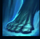
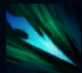
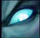
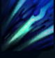
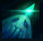

Kalista
| Kalista The Spear Of Vengeance | |
|---|---|
| Release date | 20.11.2014 |
| Class | Marksman |
| Positions | Bottom |
| Resource | Mana |
| Range type | Ranged |
| Adaptive type | Physical |
| Base statistics | |||
| Health | 534 – 2234 | Mana | 250 – 1015 |
| Health regen. | 3.75 – 13.1 |
Mana regen. | 6.3 – 13.1 |
| Armor | 21 – 89 | Attack damage | 69 – 128.5 |
| Magic resist. | 30 – 38.5 | Crit. damage | 175% |
| Move. speed | 325 | Attack range | 525 |
Kalista este spiritul nemuritor al răzbunării. Spectrul ei plin de furie este invocat din Insulele Umbrelor ca să-i vâneze pe trădători și pe cei care-și ating scopurile mârșave prin înșelăciune. Cei nedreptățiți cer deseori răzbunarea, dar Kalista le răspunde doar celor dispuși să-și dea chiar și sufletul pentru asta. Victimele furiei Kalistei ar face bine să-și spună ultima rugăciune, pentru că legămintele făcute cu această sinistră războinică se încheie mereu la fel: cu lăncile ei de foc rece împlântate în inimile trădătorilor. |  |
ECHILIBRU MARȚIAL Introdu o comandă de mișcare cât timp Kalista își pregătește un atac de bază sau o ''Străpungere'' pentru a parcurge rapid o distanță scurtă în momentul lansării atacului. |
||
|---|---|---|---|---|
 |
STRĂPUNGERE Aruncă o lance rapidă care trece prin inamicii pe care îi ucide. |
|||
 |
SANTINELĂ Primești daune bonus când Kalista și aliatul său ''legat sufletește'' lovesc aceeași țintă. La activare, Kalista trimite un suflet să patruleze pe o traiectorie și să dezvăluie zona din fața sa. |
|||
|  |
SFÂȘIERE Atacurile își străpung țintele cu lănci. Activează pentru a smulge lăncile, încetinind și provocând daune proporționale. |
|||
 |
CHEMAREA SORȚII Kalista își teleportează către ea aliatul ''legat sufletește''. Acesta primește abilitatea de a se năpusti către o poziție, aruncând în spate campionii inamici. |